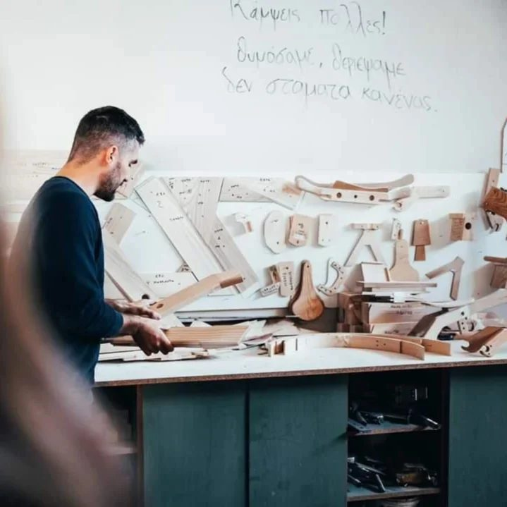

Wooden bicycles
Ride close to natural life.
Bicycles with frames shaped by hand from wood, in our workshop in Greece. Based in Belgium.


Wooden bicycles
Bicycles with frames shaped by hand from wood, in our workshop in Greece. Based in Belgium.
